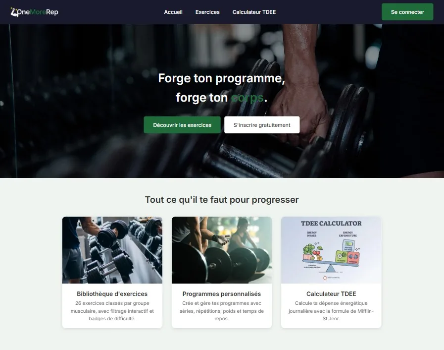

OneMoreRep
Site de musculation — projet de fin de formation, en production
Bibliothèque d'exercices, création de programmes d'entraînement personnalisés, calculateur de dépense énergétique journalière selon la formule de Mifflin-St Jeor, et une carte des salles de sport alentour.
Architecture MVC écrite sans framework : routeur, contrôleurs, managers, modèles. Authentification par session avec rôles utilisateur et administrateur, mots de passe hachés, requêtes préparées PDO. Tests PHPUnit sur la logique métier.
- PHP 8
- MySQL / PDO
- JavaScript vanilla
- Leaflet · Overpass API
- PHPUnit
- Composer